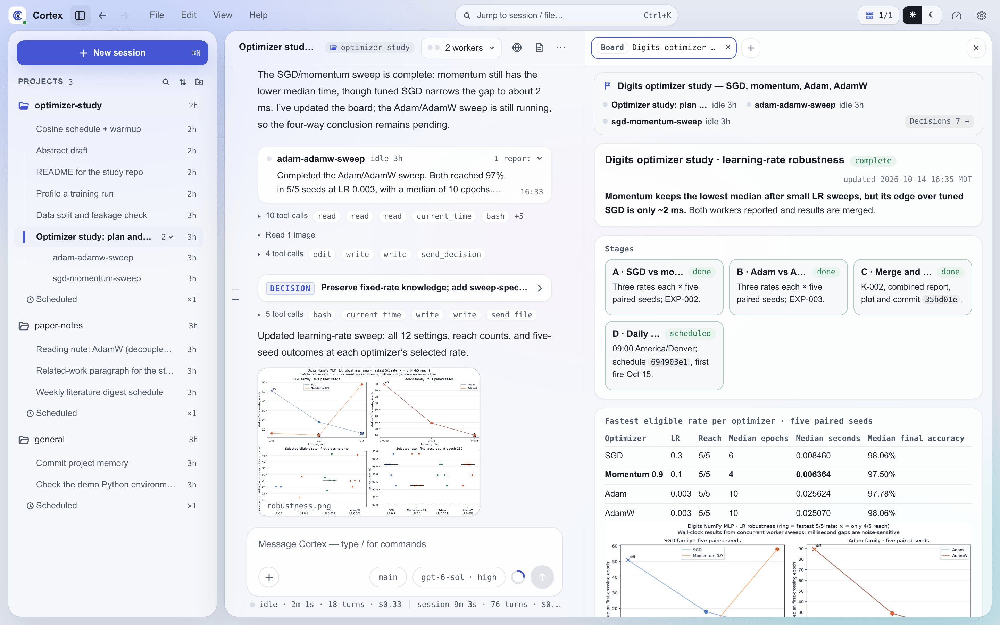

Cortex¶
Cortex 是一个面向自主科研、自我改进循环和以天计长任务的智能体工作台。你给它一个带有成功标准的使命，它会规划工作，带着一组智能体在你的多台机器和 GPU 上执行，把每个结果以纯文件形式记在项目里，并对照你们约定的内容检查结果，只在需要你拍板时才来问你。

为什么选择 Cortex？¶
终端里的编程智能体围绕单个会话设计：一个任务、一台机器、一小时内做完。自主科研（Auto Research）和递归自我改进（RSI）需要的不止这些：一项研究要跑好几天，比其中任何一个会话都长；结果要留下来，一轮一轮地对比；工作要拆给多个智能体；实验跑在 GPU 服务器上，而不是智能体启动的那台机器上。
Cortex 把编程智能体（Claude Code，或者用你已经付费的 provider 跑 PI）作为长期运行的服务，专为这类工作而设计：
- 任务跨会话接着跑 —— 使命、状态和决策以纯文件形式保存，而不是存在不断积累、逐渐失效的聊天记录里，所以新会话能从上一个会话停下的地方接着做。
- 实验结果留得下来 —— 每个实验都有自己的记录：跑了什么、得到什么、说明什么；确认的结论和跨实验的模式也在旁边一并积累（记忆）。
- 多个智能体协作 —— 主会话把有边界的工作交给子智能体和持久的 worker，它们各自从全新的上下文开始；主会话还维护一块实时看板，显示工作进行到哪里（团队模式）。
- 智能体管理跨机器的模型训练 —— 智能体先看哪块 GPU 空闲，再在任意已连接的机器上启动训练和评测，不用轮询就能等它们跑完（跨机器、等待点）。
- 这套环境本身也能改进 —— 技能、规则、钩子，乃至 Cortex 自己的源码，都是智能体可以修改的文件，边界由你写的安全规则划定。Cortex 本身完全是在 Cortex 里开发的。
特性¶
- 计划与审批 —— 不简单的工作从你批准的计划开始；提问、决策和需要签字的操作都以卡片形式出现，直接在原地处理（安全与审批）。
- 子智能体与团队模式 —— 有边界的工作交给上下文干净的子智能体；开启团队模式后，一个会话可以带领持久的 worker 会话（团队模式）。
- 用看板跟踪长任务 —— 长任务在对话旁边有一个实时状态页，展示状态、计划、需要你处理的事和已做出的决策（看板）。
- 结构化项目日志 —— 每个项目以纯文件形式保留使命、路线图、状态、实验、知识、模式和决策（记忆）。
- 定时任务与等待点 —— 安排 Cortex 定期扫描、摘编或巡查；会话发起的训练、构建或评测结束时，由等待点把它唤醒（调度、等待点）。
- 跨机器统一代理 —— 通过
cortex-client连接任意 Mac、Windows 或 Linux 机器；工作台显示每台机器的 CPU、内存、磁盘，以及每块 GPU 的负载和进程（跨机器）。 - 可编辑的技能与插件 —— 技能就是普通的
SKILL.md文件，Cortex 和你都可以编写、覆盖或还原它们，直接改文件或在设置 → 插件中操作；执行环境决定每个会话加载哪些插件、规则和工具（技能与插件、配置）。 - 从源码重建自己 —— 用
CORTEX_REPO指向一份源码 checkout 后，Cortex 会在代码变化时自动重建、重新安装并重启自己（热重建）。 - 由 agent 操作的浏览器 —— agent 在服务器或你自己机器上的 Chrome 里打开、阅读和操作网页；你可以实时观看，遇到登录时接管（Agent 浏览器）。
- Web、原生应用、聊天平台与终端访问 —— 浏览器工作台、Linux/macOS/Windows 桌面应用、Android 应用、Slack、飞书和 TUI 共用同一服务器。工作台把会话、worker、看板、审批、机器和项目记忆并排呈现。
Cortex 使用方式¶
| 界面 | 适用场景 | 指南 |
|---|---|---|
| 浏览器工作台 | 无需安装客户端，从现有浏览器访问 | 浏览器访问 |
| 桌面应用 | Linux、macOS 或 Windows 原生工作台 | 桌面与 Android 应用 |
| Android 应用 | 移动端会话、项目与审批 | 桌面与 Android 应用 |
| Slack 或飞书 | 对话式操作与通知 | 快速入门 |
| TUI | 全屏终端操作 | CLI 参考 |
快速开始¶
桌面应用可以在 macOS、Linux 或 Windows 上无需终端地安装并启动 Cortex 服务器。使用终端时：
服务器与聊天平台的详细设置见快速入门。服务器启动后，可在服务器上打开 http://127.0.0.1:3004 进入工作台，按浏览器访问从其他地方访问，或按桌面与 Android 应用连接原生客户端。